Welcome to our app! Get ready to explore a world of captivating photos and stories from Instagram. To access exclusive content, including private photos and stories, please log in using your credentials. Once logged in, you'll unlock a treasure trove of curated content waiting just for you.
How to Use
Hello Welcome!
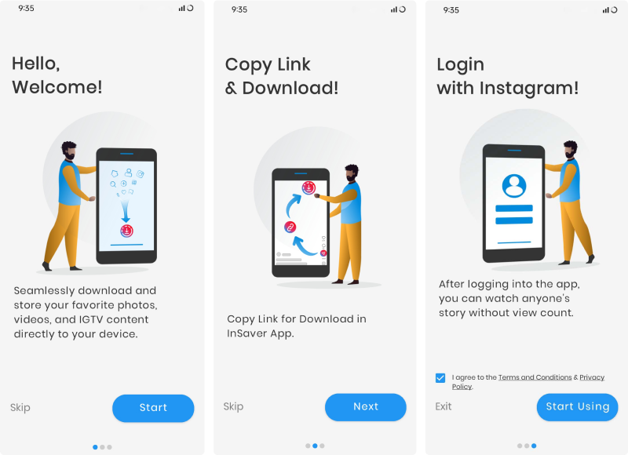
Home Screen
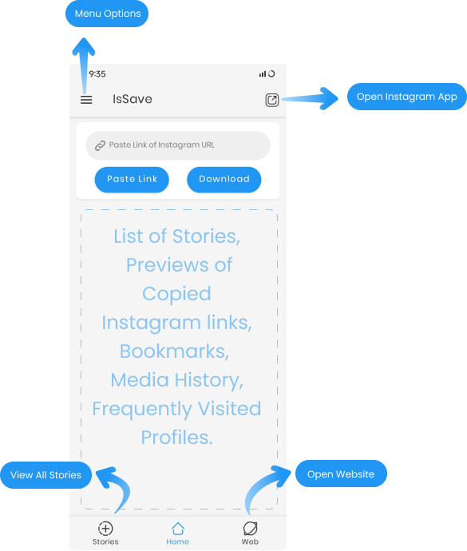
Given 3 buttons at the bottom: With which you can switch between All Stories
Home and Instagram Website.
You can visit bookmarks, media history or frequent profiles directly from
the home screen.
Please note that: when you turn off the paste preview setting switch, you
will not see the preview.
All buttons are placed in menu options for quick access
The home screen offers a plethora of functionalities at your fingertips. "The home screen is a hub of convenience, presenting an array of essential features for seamless navigation. Here, you'll find quick-access buttons for pasting content and initiating downloads, alongside a comprehensive list of captivating stories and media. Organize your favorites effortlessly with the bookmarks feature, while exploring additional menu options for tailored interactions and personalized experiences."
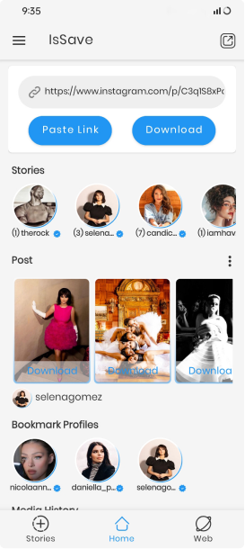Copy Paste Download
Open Instagram and share button
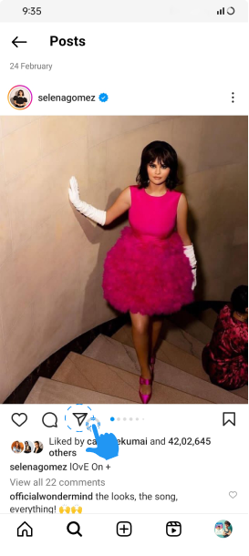
A dialog box will open in front of you from which you will have to click on the
Copy Link button.
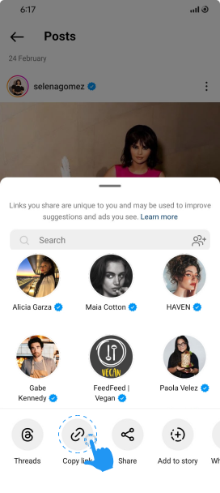
After copying the link, you will have to open the app in which it will be
directly pasted and after some time the list of photos and videos of the link
will be shown in front of you.
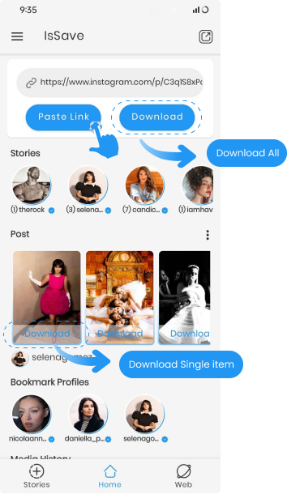
After the preview of the pasted link appears, you have two options:
You can download all the items at once by clicking on the download button
next to Paste.
You can download a single image by clicking on the download text at the
bottom of the preview items.
Similarly, you can copy the URL of the:Stories
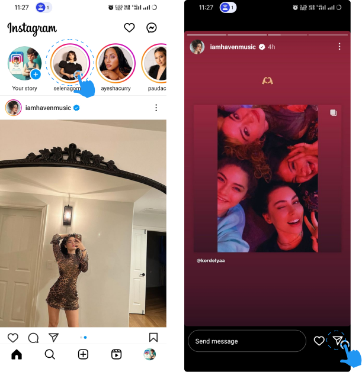
Reels
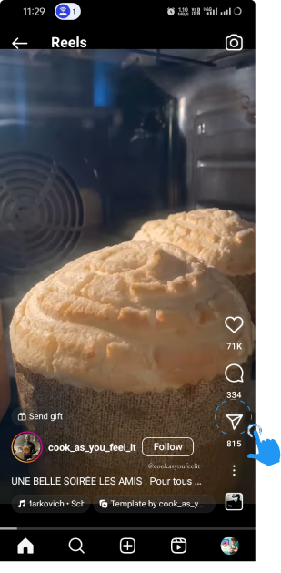
Highlights
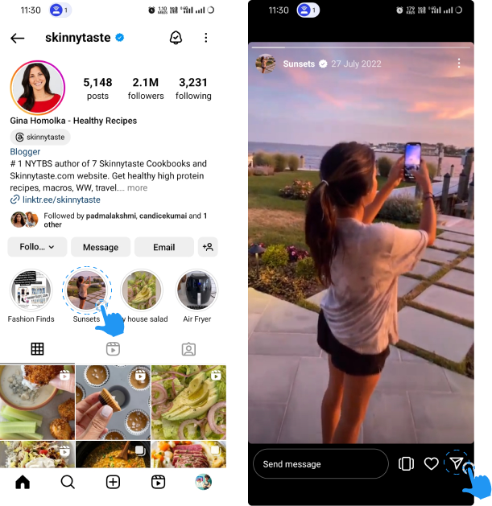
User Profile
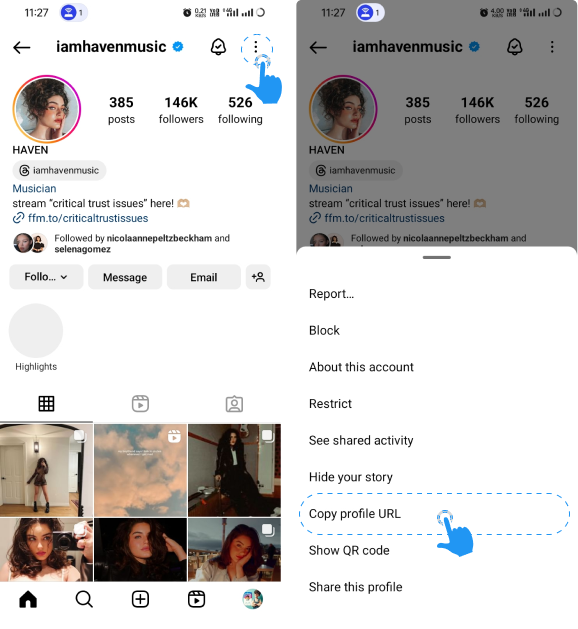
Apart from this, if you do not want to copy, you can also open the post in the app and download it through share. 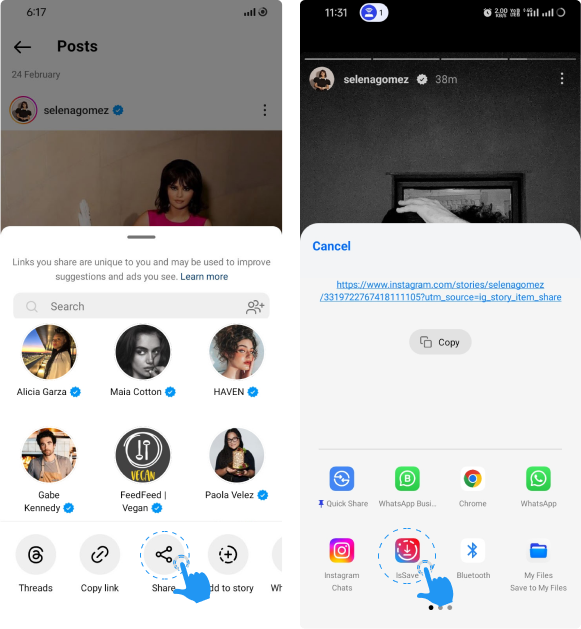
Similarly, you can copy the URL of the:
Apart from this, if you do not want to copy, you can also open the post in the app and download it through share. 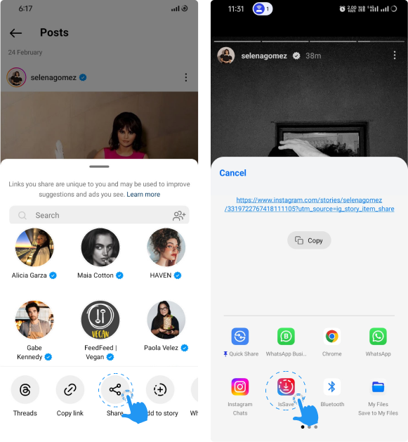
Login with Instagram
You have to login to download Instagram stories and to download media from
private account.
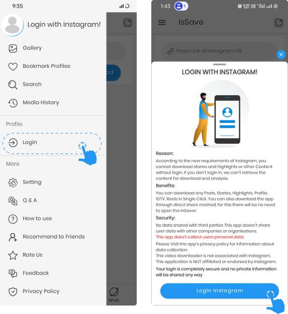
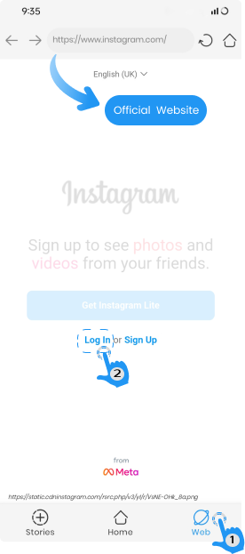
To login with Instagram, you will have to enter your username and password.
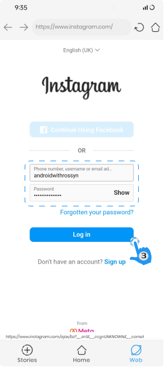
After logging in to the website, you can download directly from here and can
also download through copy paste method.
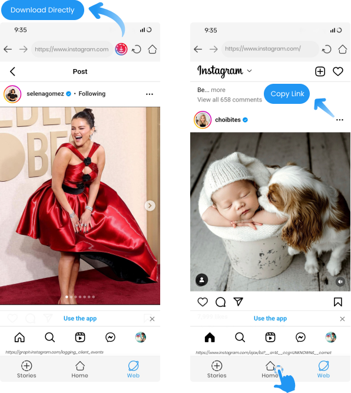
Or
How to Logout
Logging out of Instagram is as easy as logging in.
You have to go to the menu option of the app, click on Logout and when the
dialog open you can click on Accept button.
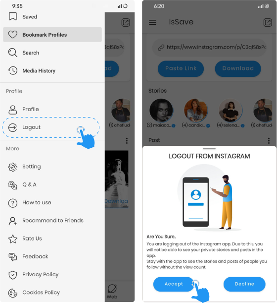
How to Bookmark
To bookmark your favorite person, copy their profile URL or username.
By going to the bookmark section of the app, you will have to bookmark the
profile by clicking on Add User.
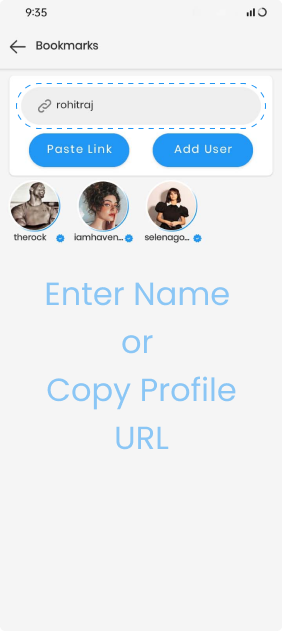
Use of IsSave App

Contact Us
If you have any questions or suggestions about my How to use Page, do not hesitate to contact me at sumitra.devapps@gmail.com